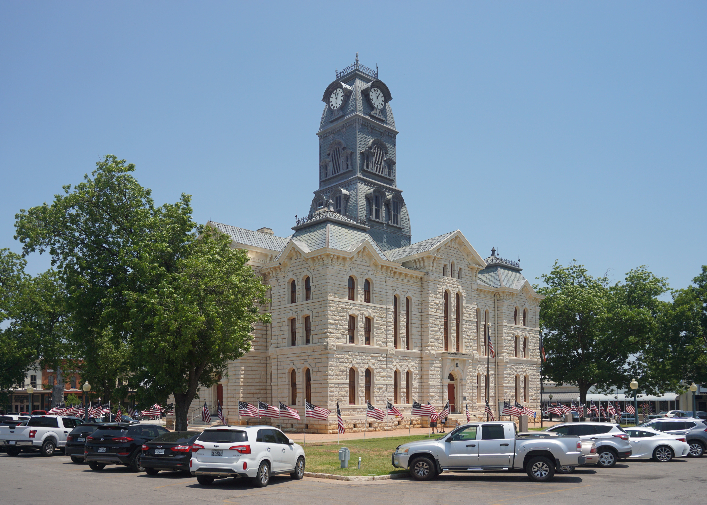
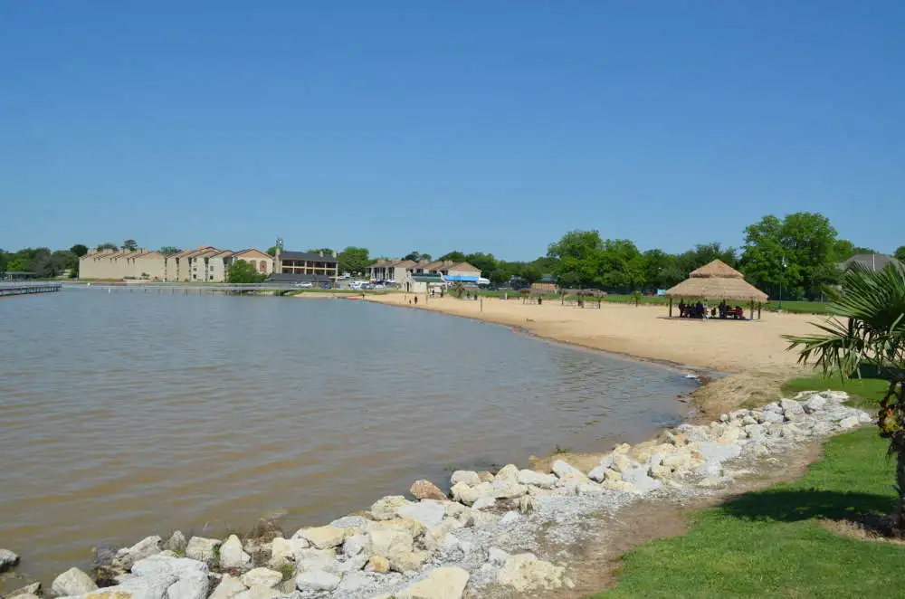
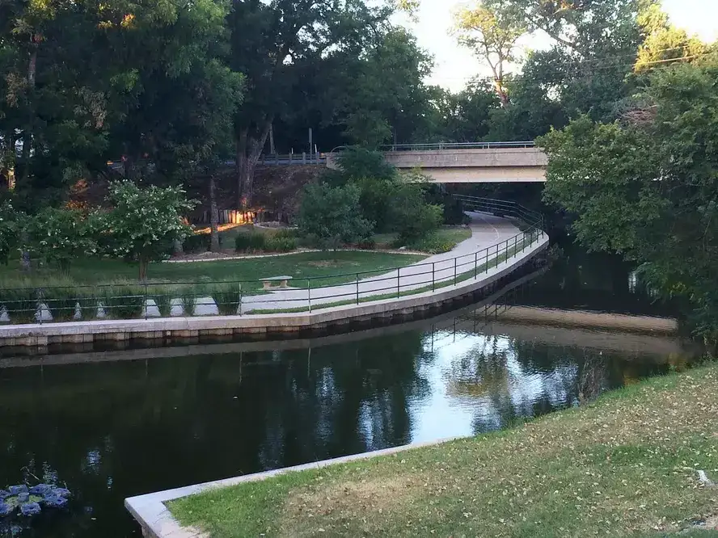

The following Information is from the US Census Bureau.
As of July 1, 2021 Granbury has 11,424 residents.
8.7 % of the population is under 5 years old.
17.6 % of the population is under 18 years old.
29.8 % of the population is 65 years or older.
The population is 55.6% female.
The population declares as 91.9% white, with 6.5% of this group also declaring a Hispanic origin.
An additional 4% declares itself of Hipanic origin without indicating race.
1.5% is Black, 0.9% American Indian, 0.6% Asian and 4.3% of the population is mixed race.
There are 829 veterans.
2.1% of the population is foreign born
Granbury Statistics
According to the US Census Bureau:
54.6% of the population owns a house.
Houses cost $225,900 on average.
Rent is $1,133 per month on average.
There are 4,747 households with an average of 2.07 persons per household.
6.2% of persons ages 5+ speak a language other than English at home.
95% of households have a computer and 86.4% have a broadband Internet subscription.
91.2% of the population has graduated high school and 28.2% has at least a Bachelor's degree.
8.3% of the persons under 65 has a disability.
12.8% of the population lacks health insurance.
50.7% of persons 16+ is working and 43.4% of these are female.
The total revenue from accomodation and food services in 2017 was $95,301,000.
The total revenue from health care and social assistance in 2017 was $201,400,000.
The total revenue from transportation and warehousing in 2017 was $5,778,000.
The total retail sails in 2017 was $718,080,000.
The total retail sales per capita in 2017 was $72,651,
The mean travel time to work is 30.8 minutes.
The median household income in 2021 was $52,956.
The per capita income over 2021 was $39,715.
13.2% of the population is poor.
596 firms offered employment in 2020, 288 of which were owned by men.
409 of the 596 employing firms were owned by an individual who was not part of the racial minorities.
414 of the 596 employing firms were owned by an individual who was not a veteran.
In 2010, the population per square mile was 619.1. In 2020, it had risen to 677.
In 2010, the land area in square miles was 12.89. In 2020, it had risen to 16.19.
Granbury Events
On January 21 there will be a book signing by local author Charles Sumerville at 3135 FALL CREEK HWY, GRANBURY, 76049-7924 from 11:00 AM to 1:00 PM.
Don't miss our Granbury segway tours from Monday to Friday. Full tours are at 9:00 AM, 12:00 PM and 3:00 PM with prices starting at $39.
Every Saturday there is a Mini Disc Golf Tournament held at 600 West Moore Street. It starts at 2:00 PM and the price of admission is $12.
Check out https://www.visitgranbury.com/events/ for more events.
Days Since Last Visit

The Hood County Courthouse is both a building and a historic district in Granbury, Texas. It was built in 1891. The historic district includes various other building such as a jail, a bank, a saloon and an opera house.

Lake Granbury was made in 1969 by damming the Brazos River with the De Cordova Bend Dam. It is stocked with bass and catfish and also offers boating, watering and water skiing.

The 2.17-mile-long Granbury Hike/Bike trail was built in 2006. The trail spans from the Granbury Regional Airport to Shanley Park, just north of the historic central distric mentioned above.